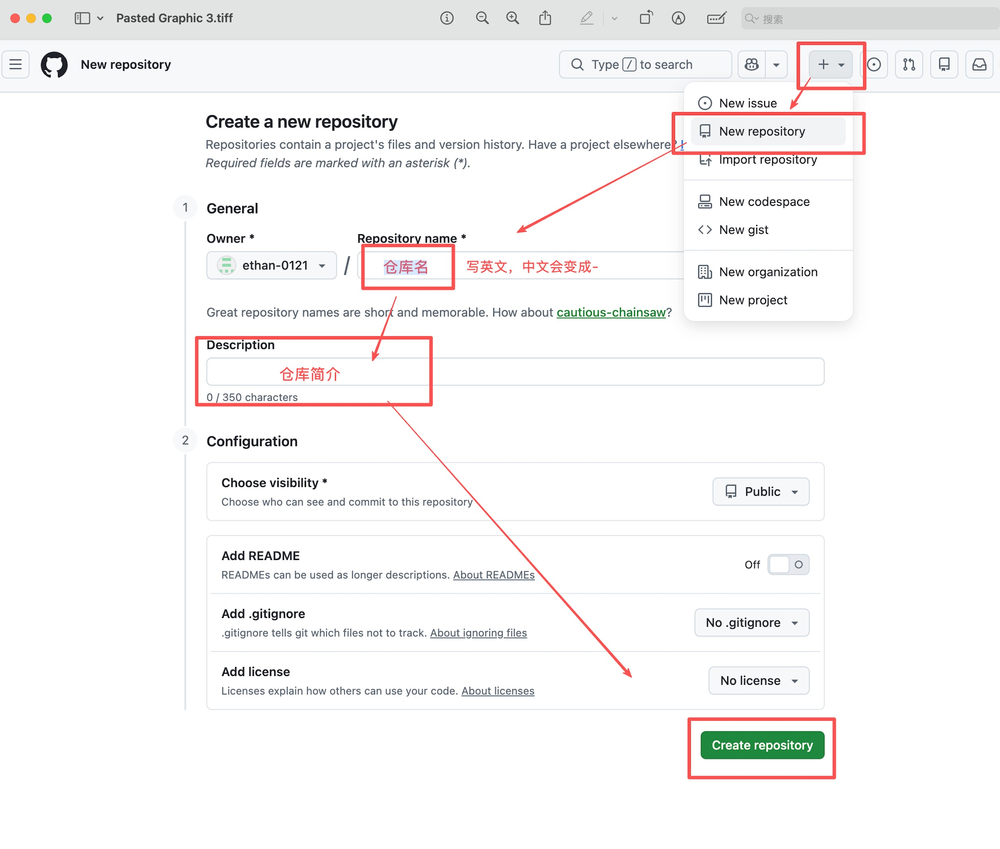
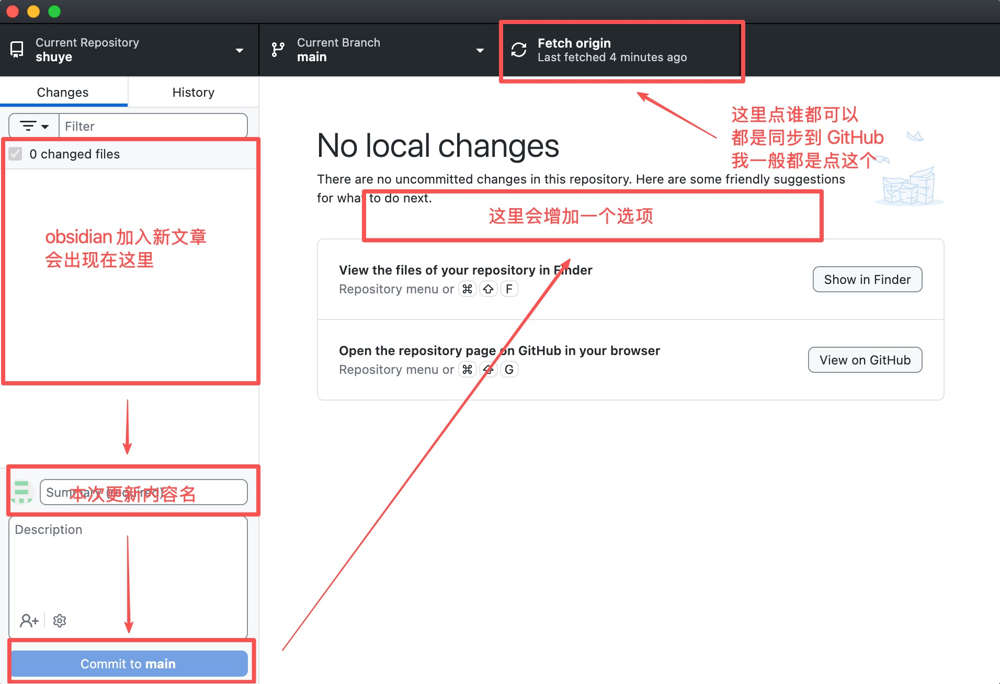
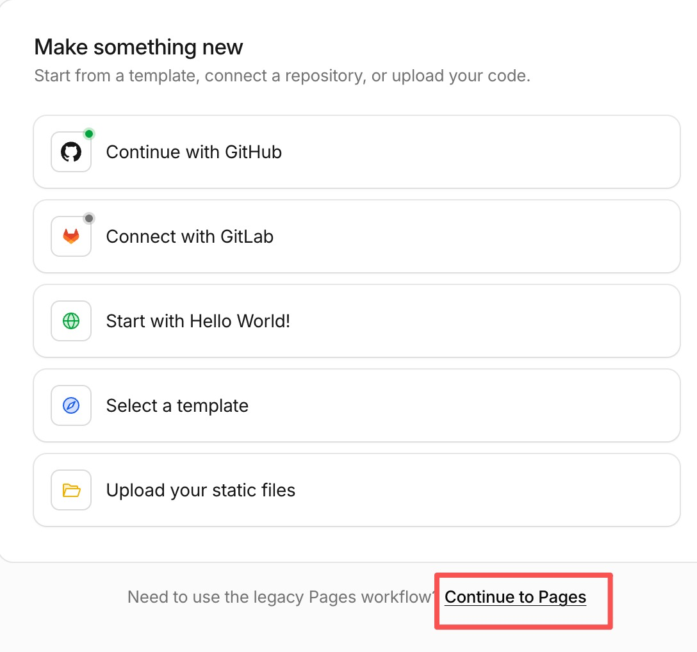
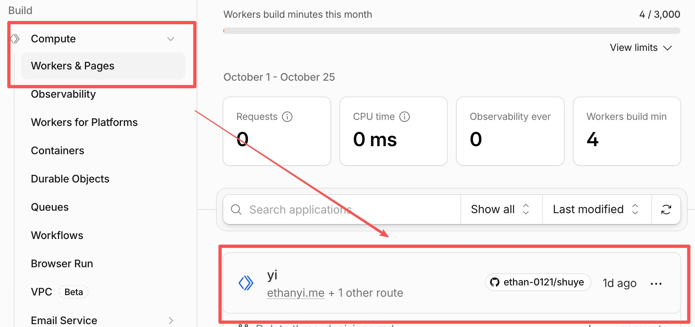
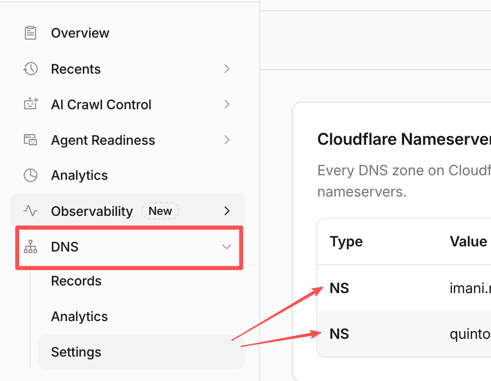
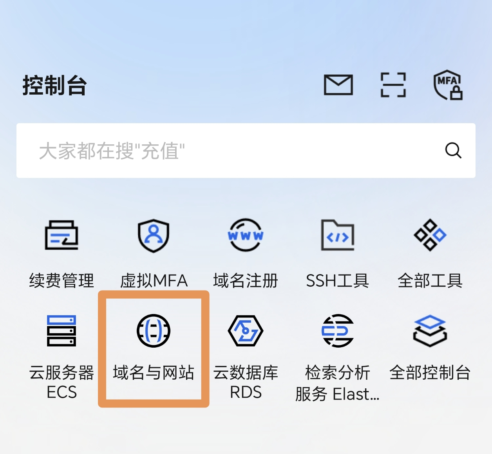

如果你也想拥有一个属于自己的静态网页，不管是用来展示作品，还是单纯写字记录，都可以看看我的这套方法。不懂代码也能跟着做，不花一分钱，全部用免费工具就能搭好。
准备条件与核心链路
本教程的完整运行链路如下： 本地 Obsidian 写 Markdown 源码 → GitHub Desktop 自动同步 → GitHub 远程仓库存储 → Cloudflare 自动拉取代码并执行命令编译为 HTML 网页对外发布。
- Obsidian：本地纯文本写作软件，用于编写并管理原始
.md文章文件。 - GitHub Desktop：图形化 Git 同步客户端，用于把本地文件夹的改动一键提交并推送到 GitHub 远程仓库，免去网页端反复手动上传文件的麻烦。
- Cloudflare (Workers & Pages)：云端平台，负责拉取仓库源码、运行云端构建指令将 Markdown 渲染为标准 HTML 网页，并提供全球高速访问与 HTTPS 访问域名。
重要原则：GitHub 线上仓库、GitHub Desktop 管理的本地目录、Obsidian 笔记库，三者必须指向电脑上的同一个本地文件夹，避免相对路径错乱导致图片丢失或链接失效。
第一部分：GitHub 准备工作
注册并登录 GitHub
- 打开
github.com，点击右上角 Sign up 注册账号。 - 按照提示输入邮箱、密码及用户名，进入邮箱查收验证码完成验证。
创建用于存放源文件的空仓库
- 登录后点击页面右上角头像旁的 「+」，选择 New repository。
- Repository name：填写英文仓库名称。
- 可见性：勾选 Public（公开仓库）。
- 初始化选项：⚠️ 不要勾选 Add a README file、不要添加
.gitignore或 License，保持为一个完全空白的仓库。 - 点击下方绿色的 Create repository 创建完成。

第二部分：安装并配置 GitHub Desktop
通过桌面客户端实现本地文件向 GitHub 的自动同步。
- 访问
desktop.github.com下载并安装适用于你系统的 GitHub Desktop。 - 打开软件，进入菜单的
Settings（或Preferences）登录你的 GitHub 账号。 - 导入本地笔记库：
- 顶部菜单依次点击：
File→Add Local Repository。 - 选择你电脑上存放 Obsidian 文章的文件夹。
- 软件若提示 “This directory does not appear to be a Git repository”，直接点击下方的 create a repository 完成本地 Git 初始化。
- 顶部菜单依次点击：
- 提交初始版本：
- 在左下角的 Summary 输入框填入备注（例如：
初始化博客文章）。 - 点击 Commit to main。
- 在左下角的 Summary 输入框填入备注（例如：
- 发布到线上：
- 点击顶部工具栏的 Publish repository 按钮。
- 选中第一步在网页端建好的同名仓库，点击确认发布。
配置完成后，后续在本地修改或新增任何文章，只需在 GitHub Desktop 点击 Commit 和 Push origin，改动便会自动同步到 GitHub 仓库。

第三部分：Obsidian 本地配置与写作规范
- 访问
obsidian.md，下载并安装 Obsidian。 - 打开 Obsidian，选择 “打开本地已存在的库”，路径直接选择第二步中由 GitHub Desktop 托管的本地文件夹。
💡 【操作前先看：路径致命规则】 Obsidian 的整个笔记库，必须就是你电脑上被 GitHub Desktop 托管的那个本地仓库文件夹！ 切勿在电脑的其他地方单独建文件夹写文章，否则 GitHub Desktop 根本监测不到你的改动，也无法推送到线上。
核心避坑：Markdown 语法设置
为了保证本地写的排版能在网页上正常显示，进入写作前必须完成以下两步配置：
- 强制使用标准 Markdown 链接： 打开 Obsidian
设置→文件与链接→ 找到 “使用 [[维基链接]]（Use [[Wikilinks]]）”，务必将其关闭。这样插入链接和图片时，会自动生成类似[文章](链接.md)和的通用格式，避免云端编译器无法解析。 - 规范图片附件存放路径： 在同个设置页面中，将 “附件默认存放路径” 设置为 “指定文件夹下的子文件夹”（如统一放在
images/或assets/下）。切勿让图片散落在根目录，确保相对路径清晰稳定。
懒人专属：让 AI 帮你在 Obsidian 里一键建好博客工作流
复制下方内容发给 AI 时，务必把【】里的内容替换为你电脑上的真实路径
💬 【提示词↓↓↓】
我正在用 Obsidian 搭建个人静态博客的写作库，所有的文章后续通过 GitHub Desktop 自动同步并上线。
【关键前提】：我的 GitHub 本地仓库文件夹路径是：【在此处粘贴你的本地文件夹完整绝对路径】。我的 Obsidian 笔记库已经打开了这个文件夹。
请基于我上述的实际根目录路径，教我一步步配置博客的写作规范：
- 目录结构：告诉我应该在当前这个文件夹里新建哪些子文件夹（请规划出「草稿箱（未发布）」、「正文（已发布）」、「静态图片资源」等清晰规范的目录层级，确保不破坏根目录结构）；
- 文章模板：生成一份通用的标准 Markdown 博客正文模板（必须包含 Frontmatter/YAML 元数据，如 title、date、category、summary、slug 等必要字段）；
- 落地步骤：用鼠标流的操作步骤，手把手教我怎么把这套结构直接在 Obsidian 界面里落地建好，并设置好新文章一键调用该模板。
第四部分：配置 Cloudflare，让网站自动生成
目前你写的个人小站文件只存在自己的电脑里，也只能在本地打开，别人看不到，换一台设备也打不开。配置 Cloudflare 的目的，就是把这些文件放到网络上，让它变成一个真正的网址，这样手机、电脑，不管在哪里、用什么设备，只要有网络都能打开。
让 AI 准备辅助文件（先做这一步）
只有文章是不够的，仓库里还需要几个“辅助文件”，用来告诉 Cloudflare 怎么把文章变成网页。你不需要看懂它们：复制下面的提示词发给 AI，照着 AI 的说明把文件放进你的本地文件夹，再用 GitHub Desktop 提交并 Push origin 就行。
复制后，把【】里的内容替换成你自己的
【提示词↓↓↓】
我是编程小白，正在搭建个人静态博客。
- 我的文章是 Markdown 格式，存放在本地文件夹，路径是：【粘贴你的本地文件夹完整路径】，文件夹已经通过 GitHub Desktop 关联到 GitHub 仓库；
- 部署平台是 Cloudflare Workers，连接 GitHub 仓库自动构建；
- 我会在 Cloudflare 里填写的构建命令是：npm ci && npm run build
- 部署命令是：npx wrangler deploy
- 我想使用的项目名称是：【想一个英文名称，例如全小写加短横线】
请帮我生成仓库需要的全部辅助文件，要求：
- 能把我的 Markdown 文章转换成网页，并且上面两条命令可以直接运行；
- 配置里的项目名称与我填写的一致；
- 包含 .gitignore，避免把不必要的大文件推送到 GitHub；
- 用最简单的话，一步步告诉我：每个文件放在哪里、电脑上需要先安装什么软件（如果需要）、需要在哪里输入哪些命令、怎么用 GitHub Desktop 推送；
- 我不懂命令行，请不要省略任何步骤。
在 Cloudflare 创建项目并绑定仓库
- 在 Cloudflare 控制台左侧导航栏点击 Workers & Pages。
- 点击页面右上角的蓝色按钮 Create application。

- 点击 Import an existing Git repository 旁边 Get started。
- 选择你的 GitHub 账号（第一次需要点击授权）。
- 在仓库列表中选中你的博客仓库。
- 项目名称填写同一个名称，两边必须一致。
- 点击 Save and Deploy。
填写两行固定命令
进入项目的 Settings（设置），找到 Build（构建） 相关设置，把下面两行分别复制进去，然后保存。这两行不需要理解，原样粘贴即可：
Build command（构建命令）：
npm ci && npm run build
Deploy command（部署命令）：
npx wrangler deploy
如果 Deploy command 里已经是
npx wrangler deploy，不用改。


第五部分：触发构建与上线访问
- 触发部署：
- 在本地 Obsidian 修改保存任意文件，打开 GitHub Desktop 提交并点击 Push origin，Cloudflare 监测到
main分支变动后会自动拉取代码并执行构建。 - 构建状态和日志可以在项目 Deployments 标签页底部的 View build history 中查看；构建失败时，修复问题后可以在这里重试。
- 在本地 Obsidian 修改保存任意文件，打开 GitHub Desktop 提交并点击 Push origin，Cloudflare 监测到
- 查看网站：
- 构建成功后，通过 Cloudflare 自动分配的
workers.dev子域名访问你的网站，地址可以在项目概览页找到。 - 此时在浏览器中看到的已是编译渲染完成的正式博客网站。
- 构建成功后，通过 Cloudflare 自动分配的
让 AI 帮你生成一篇测试稿，自己动手完成流程，等待 1 分钟左右，打开网站查看是否构建成功，如遇构建失败情况，可让 AI 帮你排查原因。
以上设置都是一次性的，以后想更新网站，只需要重复下面步骤
- 打开 Obsidian 添加新标签页、读取模板、编写或修改
.md文章，保存文件。 - 打开 GitHub Desktop，左侧会直观列出变动的文件，填写提交说明后点击 Commit to main，再点击 Push origin。
- Cloudflare 自动捕获更新，云端自动执行构建转换，数十秒后访问网站即可看到最新内容。
提醒
如果发布的图片在网页上打不开？ 复制以下提示词发给 AI：
“我的图片在 Obsidian 里能正常显示，但发布到我的个人网站之后，网站上显示不出来。我的网站是用 Cloudflare 发布的，本地文件夹路径是：【粘贴你的本地文件夹完整路径】。请帮我一步步排查，并用列步骤的方法，告诉我该怎么查。”
恭喜你，到这里，你的个人小站就已经成功上线了。你可以把 Cloudflare 分配给你的网址分享给所有人，任何人都可以通过这个网址打开你的个人网站。
如果你觉得这个网址不够好看、不好记，想换成自己的专属域名，我们就接着往下看。
第六部分：绑定自己的专属域名
购买域名
域名有三种买法，选一种就行：
- 在 Cloudflare 里买：在控制台左侧点击 Domains → Registrations，搜索并购买，不需要实名认证，买完就能用。买完域名就已经在 Cloudflare 里了。

- 阿里云、腾讯云：购买后必须先完成实名认证，域名才能使用。
在阿里云、腾讯云买完域名后，请先到域名管理页面按提示完成实名认证，再做后面的步骤，实名认证大概需要几个小时。
把域名交给 Cloudflare 管理（在阿里云、腾讯云买的才需要）
在控制台左侧点击 Domains → Overview，再点击右上角的蓝色按钮 Add domain。

选 Connect a domain 输入你买的域名，选择免费计划。
Cloudflare 会给你两条 NS 地址。可以把它理解成告诉域名“以后归 Cloudflare 管”。


回到阿里云或腾讯云的域名管理页面，把域名默认的 DNS 服务器，改成这两条 NS 地址。（阿里云如下）

等待生效，快则几分钟，慢则几个小时。回到 Domains 的 Overview 页，域名的 Status 显示 Active，就说明成功了。

让 Worker 认领这个域名
- 在 Cloudflare 控制台左侧点击 Workers & Pages，再点击你的项目名称，进入项目主页。
- 在主页找到 Domains 这一块，点击 Custom Domains and Routes 右边的“+ Add Domain”。
- 按提示输入你的域名并点选确认，Subdomain 不用填写，点击右下角的蓝色按钮 Add Domain 。


Cloudflare 会自动帮你设置解析和 HTTPS 证书，不需要你再操作。完成后，用这个域名就能打开你的网站了。
等待几分钟后，可以用自己的域名打开网页，如果打开网站报风险，没关系，点击确认，能进网页就表示解析完成了，至于风险那是这两个证书还在签发，等证书签发好，也就没问题了。


❗❗❗谨记❗❗❗
带
www和不带www是两个不同的地址，你买的是什么，绑定的是什么，就用什么网址打开，不要自作主张的增加或减少。
你可以先做个实验：用www+ 自己的域名，看能否打开。
打不开没关系，下面我会说该如何增加www跳转规则。
收尾：绑定域名之后，还要检查三件事
域名绑定成功后，下面三件事能让你的网站更安全、更好用。这三件事都在域名的设置里完成：在 Cloudflare 控制台左侧点击 Domains → Overview，再点击你的域名进入设置页。
检查 SSL/TLS 是不是 Full
- 在左侧菜单点击 Domains → Overview → 域名后的“···” → Configure SSL/TLS
- 看页面上显示的当前加密模式，确认是 Full（或 Full (strict)）。
- 如果显示的是别的，点击修改，把它改成 Full。

打开 HTTPS
- 在左侧菜单点击 SSL/TLS → Edge Certificates。
- 找到 Always Use HTTPS、Automatic HTTPS Rewrites 把它们打开。
打开 Always Use HTTPS，有人用 http:// 开头的地址访问你的网站，会自动跳转到更安全的 https://。

小站里如果有 http:// 开头的链接，浏览器可能会拦截它们。打开 Automatic HTTPS Rewrites ，Cloudflare 会自动帮你改成 https://。

增加 www 跳转
前面提醒过，带 www 和不带 www 是两个不同的地址，只绑定一个，另一个就打不开。这一步让访客输入带 www 的地址时，也能自动跳到你绑定的那个地址。这里以你绑定的是不带 www 的地址为例。
添加 www 的记录
- 在左侧菜单点击 DNS → Records，点击 Add record。
- Type 选 CNAME，Name 填
www。 - Target 填你自己购买的域名。
- 确认 Proxy status 是 Proxied（橙色云朵亮着），点击 Save。

创建跳转规则
- 在左侧菜单点击 Rules → Redirect Rules，点击 Create rule。
- 在模板里选择 Redirect from WWW to Root。
- 核对（或填写）下面这几项，模板一般会自动填好：
- If incoming requests match： Wildcard pattern
- Request URL：
https://www.* - Target URL：
https://${1} - Status code：
301 - Preserve query string：打开
- 点击 Deploy。。


部署规则时，如果弹出对话框内容，不用担心。只要你已经保存了第一步的 CNAME 记录，直接选 Ignore and deploy rule anyway，再点 Deploy rule 就行。

验证： 用 www 开头的地址，如果地址自动变成不带www ，就说明跳转成功了。
好了，现在所有的设置都已经完成。那么，你打算用这个网站来做什么呢？
一份在线简历？
一部作品集？
一个收藏夹？
一本公开的日记？
还是别的什么呢？
—— Ethan